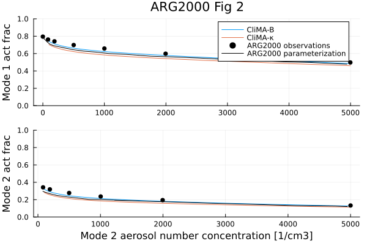
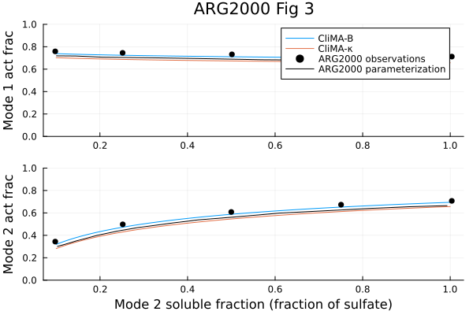
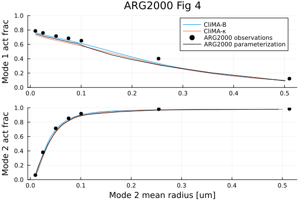
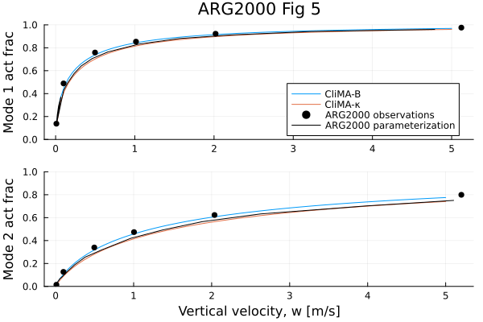

Aerosol Activation
The AerosolActivation.jl module contains parameterization of activation of aerosol particles into cloud droplets via deposition of water vapor. Accompanying it, is the AerosolDistribution.jl module, which contains information about the aerosol size distribution and chemical properties. The parameterization computes the total activated number and mass from a given aerosol size distribution. It is based on Köhler theory and assumes equilibrium thermodynamics. The modules are an implementation of the parameterization from [36] and [37]. The aerosol chemical composition can be expressed using the B parameter from [37] or the kappa parameter from [38].
Assumed aerosol size distribution and properties
Aerosol particles are assumed to follow a multi-mode lognormal size distribution. Particles in each mode are assumed to be internally mixed. The following table lists the parameters defining the aerosol physical and chemical properties using the B parameter. The $r_{dry}$, $\sigma$, and $N_{tot}$ are given for each mode. Other parameters are defined for each component in each mode.
| variable name | definition | units |
|---|---|---|
| $r_{dry}$ | geometric mean dry radius | $m$ |
| $\sigma$ | geometric standard deviation | $-$ |
| $N_{tot}$ | total number concentration | $m^{-3}$ |
| $r$ | component mass mixing ratio | $-$ |
| $\epsilon$ | mass fraction of water soluble material | $-$ |
| $\phi$ | osmotic coefficient | $-$ |
| $M_a$ | molar mass | $kg \, mol^{-1}$ |
| $\nu$ | number of ions the salt dissociates into in water | $-$ |
| $\rho_a$ | aerosol density | $kg \, m^{-3}$ |
When using the kappa formulation, one has to specify fewer parameters.
| variable name | definition | units |
|---|---|---|
| $r_{dry}$ | geometric mean dry radius | $m$ |
| $\sigma$ | geometric standard deviation | $-$ |
| $N_{tot}$ | total number concentration | $m^{-3}$ |
| $r_{vol}$ | component volume mixing ratio | $-$ |
| $M_a$ | molar mass | $kg \, mol^{-1}$ |
| $\kappa$ | kappa parameter | $-$ |
The parameterization assumes that the solute is sufficiently soluble so that its concentration does not increase as the droplet grows. The effects of surfactants on surface tension are also not considered.
Mean Hygroscopicity
Hygroscopicity describes the impact of solute on aerosol efficiency in taking up water vapor from the environment (i.e. the Raoult's law). The parametrization accepts two ways of describing it, either using the $B$ parameter or $\kappa$ parameter. The $B$ parameter is defined in eq. (3) in [37]:
\[B = \frac{\nu \, \phi \, M_w \, \rho_a}{M_a \, \rho_w}\]
where:
- $\nu, \, \phi, \, M_a, \, \rho_a$ are the aerosol properties defined in the above table,
- $M_w$ is the molar mass of water,
- $\rho_w$ is the density of water.
The mean $B$ parameter for internally mixed mode $i$ made up of $j$ aerosol species is computed according to eq. (4) in [37]:
\[\begin{equation} \bar{B_i} = \frac{M_w \sum_{j = 1}^{J} \frac{r_{ij} \, \nu_{ij} \, \phi_{ij} \, \epsilon_{ij}}{M_{aij}}}{\rho_w \sum_{j = 1}^{J} \frac{r_{ij}}{\rho_{aij}}} \end{equation}\]
where:
- $i = 1, 2, ..., I$ iterates over aerosol size distribution modes,
- $j = 1, 2, ..., J$ iterates over aerosol components within a given mode,
- $r_{ij}$ is the mass ratio of component $j$ in mode $i$.
The $\kappa$ parameter values for different chemical compounds are provided in Table 1 in [38]. The mean $\kappa$ parameter for internally mixed mode $i$ made up of $j$ aerosol species is computed as a volume weighted average:
\[\kappa_i = \sum_{j=1}^{J} r_{ij,\, vol} \kappa_{ij}\]
where:
- $r_{ij, \, vol}$ is the volume ratio of component $j$ in mode $i$.
Critical supersaturation
Supersaturation $S$ is the ratio of water vapor pressure to saturation vapor pressure. Köhler theory defines $S$ at which the growing aerosol particle is in equilibrium with the environment over a range of its sizes. It takes into account the curvature effects and the solute effects. Aerosol activation occurs when the threshold supersaturation, named critical supersaturation $S_c$, is reached. After reaching $S_c$, even when $S$ decreases, as long as the conditions remain saturated, the particle will continue to grow. The critical supersaturation is defined by the maximum of the Köhler curve. For example, eq.(9) in [37] defines the the critical supersaturation for a particle with dry radius equal to the mean mode radius:
\[\begin{equation} S_{ci} = \frac{2}{\sqrt{\bar{H_{i}}}} \bigg( \frac{A}{3 \, r_{dry, \, i}} \bigg)^{3/2} \label{eq:Scriti} \end{equation}\]
where:
- $H_i$ is either the $B_i$ or the $\kappa_i$ hygroscopicity parameter
- $A$ is the coefficient describing the curvature effects (i.e. Kelvin effect),
- $r_{dry \, i}$ is the mean dry radius for mode $i$.
Coefficient $A$ is defined as in equation (5) in [36].
\[\begin{equation} A = \frac{2 \tau M_w}{\rho_w R T} \end{equation}\]
where:
- $\tau$ is the surface tension of water,
- $R$ is the universal gas constant,
- $T$ is the temperature.
Maximum Supersaturation
Maximum supersaturation reached by the system $S_{max}$ governs what aerosol sizes are activated and what aren't. We estimate $S_{max}$ by considering a parcel of air raising adiabatically with a constant velocity, see for example [39]. The time rate of change of $S$ is given by eq (A11) in [39]
\[\begin{equation} \frac{dS}{dt} = \alpha w - \gamma \frac{d\chi}{dt} \label{eq:Sevolution} \end{equation}\]
where:
- $w$ is the vertical velocity,
- $d\chi / dt$ is the water condensation rate during aerosol activation and growth,
- $\alpha$ and $\gamma$ are coefficients that do not depend on aerosol properties.
The parameters $\alpha$ and $\gamma$ are defined similarly to eq. (11) and (12) in [36], but we follow the full formulation from [39] eq. (A11), without assuming $S + 1 ≈ 1$. While the difference is often small, we retain the full expressions for completeness and consistency with our implementation. The parameters are:
\[\begin{equation} \alpha = \frac{p_{vap}}{p_{vap}^{sat}}\left[\frac{L_v \, g}{R_v \, c_{pm} \, T^2} - \frac{g}{R_m \, T}\right] \end{equation}\]
\[\begin{equation} \gamma = \frac{R_v T}{p_{vap}^{sat}} + \frac{p_{vap}}{p_{vap}^{sat}}\frac{R_m \, L_v^2}{R_v \, c_{pm} \, T \, p} \end{equation}\]
where:
- $L_v$ is the latent heat of vaporization,
- $g$ is gravitational acceleration,
- $R_v$ is the gas constant of vapor,
- $R_m$ is the gas constant of air (dry air and moisture)
- $c_{pm}$ is the specific heat of air (dry air and moisture),
- $p_{vap}$ is the vapor pressure,
- $p_{vap}^{sat}$ is the saturation vapor pressure,
- $p$ is the total air pressure.
The maximum supersaturation is estimated from eq. (\ref{eq:Sevolution}) assuming steady a state solution $dS/dt = 0$. [36] and [37] show how to derive an approximate solution for $S_{max}$, since analytical solution is in general not possible. They consider approximate solutions for very small and very large critical supersaturation values relative to maximum supersaturation, and combine them into a final expression for $S_{max}$. The final formula is presented in eq (6) in [37]
\[\begin{equation} S_{max} = \frac{1}{\Bigg\{ {\sum_{i=1}^{I}\frac{1}{S_{ci}^{2}}\bigg[f_i \Big( \frac{\zeta}{\eta_{i}} \Big)^{\frac{3}{2}} + g_{i} \Big(\frac{S_{ci}^{2}}{\eta_{i} + 3\zeta} \Big)^{\frac{3}{4}}\bigg]} \Bigg\}^{\frac{1}{2}}} \end{equation}\]
where
- $S_{ci}$ is the critical supersaturation for mode $i$ defined in eq. (\ref{eq:Scriti}),
- $f_i$, $g_i$, $\zeta$, $\eta_i$ are the coefficients defined in eqs. (7, 8, 10 and 11) in [37].
\[\begin{equation} f_i = 0.5 \, \mathrm{exp} (2.5 \, \mathrm{ln}^{2} \sigma_{i}) \end{equation}\]
\[\begin{equation} g_i = 1 + 0.25 \, \mathrm{ln} \sigma_i \end{equation}\]
\[\begin{equation} \zeta = \frac{2A}{3} \bigg(\frac{\alpha w}{G}\bigg)^{\frac{1}{2}} \end{equation}\]
\[\begin{equation} \eta_i = \bigg(\frac{\alpha w}{G}\bigg)^{\frac{3}{2}} \frac{1}{2 \pi \rho_w \gamma N_i} \end{equation}\]
where:
- $G(T) = \frac{1}{\rho_w} \, \left(\frac{L_v}{KT} \left(\frac{L_v}{R_v T} - 1 \right) + \frac{R_v T}{p_{vap}^{sat} D} \right)^{-1}$ combines the effects of thermal conductivity $K$ and water diffusivity $D$.
Number and mass of activated particles
The total number $N_{act}$ and mass $M_{act}$ of activated aerosol particles can be computed by integrating their size distribution starting from the smallest activated size. Following the derivations of [36] and [37] this can be expressed in terms of critical supersaturations of each size distribution mode $S_{ci}$ and the maximum supersaturation $S_{max}$.
\[\begin{equation} N_{act} = \sum_{i = 1}^{I} N_{i}\frac{1}{2}\bigg[1 - \mathrm{erf}(u_{i})\bigg] \end{equation}\]
\[\begin{equation} M_{act} = \sum_{i = 1}^{I} M_{i}\frac{1}{2}\bigg[1 - \mathrm{erf}\bigg(u_{i} - \frac{3 \sqrt2}{2} ln(\sigma_i)\bigg)\bigg] \end{equation}\]
where:
- $M_i$ is the average molar mass of aerosol particles in mode $i$,
- $u_i$ is given in equation (15) in [37].
\[\begin{equation} u_i = \frac{2}{3\sqrt2 \, ln(\sigma_i)} ln\bigg( \frac{S_{ci}}{S_{max}} \bigg) \end{equation}\]
where:
- $S_{ci}$ is the mode critical supersaturation,
- $S_{max}$ is the maximum supersaturation.
Example of Aerosol Activation from ARG2000
The figures below have been reproduced from [37] using the aerosol activation parameterization implemented in this project.
include("plots/ARGplots_fig1.jl")

include("plots/ARGplots.jl")
make_ARG_figX(2)
make_ARG_figX(3)
make_ARG_figX(4)
make_ARG_figX(5)"/home/runner/work/CloudMicrophysics.jl/CloudMicrophysics.jl/docs/build/Abdul-Razzak_and_Ghan_fig_5.svg"   
Aerosol activation prediction with ML emulators and EKP calibration
The CloudMicrophysics package offers an advanced feature for predicting the aerosol activation fraction using machine-learned emulators. Users have access to a function that utilizes pre-trained models for the prediction of activation fraction. Additionally, the package includes tools for training machine learning models, tailored to specific datasets or needs. The training process can benefit from incorporating the ARG activation equation, enhancing the relevance of training data. Emulator training, covering neural networks, Gaussian processes, and EvoTrees, is showcased in test/aerosol_activation_emulators.jl.
In addition, we provide functionality and a demonstration for re-training the free parameters of the traditional ARG activation scheme using Ensemble Kalman Processes. This functionality is showcased in test/aerosol_activation_calibration.jl.
Using ML emulators or calibration with Ensemble Kalman Processes for predicting aerosol activation is provided through an extension to the main package. This extension will be loaded with CloudMicrophysics.jl if both MLJ.jl, DataFrames.jl, and EnsembleKalmanProcesses.jl are loaded by the user as well.
Modification for Local Supersaturation with Preexisting Hydrometeors
The original ARG activation scheme assumes adiabatic ascent with no preexisting cloud or ice particles, which is a valid approximation near cloud base. As a result, the ARG formulation is traditionally applied only at cloud base, where no vapor has yet condensed and no hydrometeors exist to affect the supersaturation evolution.
However, in many applications—such as large-eddy simulations or cloud-resolving models—it is desirable to apply the activation scheme locally, throughout the vertical extent of the cloud. In such cases, preexisting cloud droplets and ice crystals act as persistent vapor sinks, suppressing supersaturation and inhibiting further activation.
To relax the cloud-base-only constraint and extend ARG into a local operator, we propose modifying the supersaturation tendency equation by incorporating the effects of these preexisting hydrometeors. When coupling this approach to a full model, additional clipping may be needed: the modified ARG should only be applied when the local supersaturation does not exceed the predicted maximum, and when the number concentration of hydrometeors remains below the potential activation of aerosols.
Modified Supersaturation Budget
We modify the supersaturation tendency equation to include additional vapor sink terms:
\[\frac{dS}{dt} = \alpha w - \gamma \frac{d\chi}{dt}_{\text{activation}} - \gamma \frac{d\chi}{dt}_{\text{liquid}} - \gamma_i \frac{d\chi}{dt}_{\text{ice}},\]
where the thermodynamic coefficient $\gamma_i$ is defined as
\[\begin{equation} \gamma_i = \frac{R_v T}{p_{vap}^{sat}} + \frac{p_{vap}}{p_{vap}^{sat}}\frac{R_m \, L_v L_s}{R_v \, c_{pm} \, T \, p} \end{equation}\]
where $L_s$ is the latent heat of sublimation. The new sink terms are:
- Liquid sink:
\[\frac{d\chi}{dt}_{\text{liquid}} = 4 \pi \rho_w N_l r_l G_l S,\]
- Ice sink:
\[\frac{d\chi}{dt}_{\text{ice}} = 4 \pi \rho_i N_i r_i G_i S_i,\]
with
\[S_i = \xi (S + 1) - 1, \quad \xi = \frac{e_{s,\ell}}{e_{s,i}}.\]
Here:
- $N_l$, $r_l$, and $G_l$ are the number concentration, radius, and condensational growth coefficient of liquid droplets,
- $N_i$, $r_i$, and $G_i$ are the corresponding values for ice crystals,
- $\rho_w$ and $\rho_i$ are the densities of liquid water and ice.
We define:
\[K_l = 4 \pi \rho_w N_l r_l G_l \gamma, \quad K_i = 4 \pi \rho_i N_i r_i G_i \gamma_i,\]
yielding the modified supersaturation equation at peak supersaturation:
\[0 = \alpha w - \gamma f(S_{max}) - K_l S_{max} - K_i \big[ \xi (S_{max} + 1) - 1 \big].\]
Approximate Solution
Let $S_0$ be the ARG solution obtained by solving:
\[\alpha w = \gamma f(S_0),\]
and approximate the nonlinear sink function $f(S)$ as linear between 0 and $S_0$:
\[f(S) \approx f(S_0) \cdot \frac{S}{S_0}.\]
Substituting into the modified budget and solving for $S_1$:
\[\alpha w = \gamma f(S_0) \cdot \frac{S_1}{S_0} + K_l S_1 + K_i \big[\xi (S_1 + 1) - 1 \big],\]
yields:
\[S_1 = \frac{(\alpha w - K_i (\xi - 1)) S_0}{\alpha w + (K_l + K_i \xi) S_0}.\]
The final expression for the modified supersaturation becomes:
\[S_{\text{max}}^{\text{modified}} = \frac{(\alpha w - K_i (\xi - 1)) S_{\text{max}}^{\text{ARG}}}{\alpha w + (K_l + K_i \xi) S_{\text{max}}^{\text{ARG}}}.\]
- When $K_l = K_i = 0$, the formula reduces to the original ARG solution.
- Larger values of $K_l$ or $K_i$ reduce the supersaturation due to vapor uptake by preexisting hydrometeors.
- This extension allows the ARG activation scheme to be applied at any vertical level, making it suitable for use as a local operator in models that resolve cloud-scale dynamics.
Example
To illustrate the behavior of the modified ARG scheme, we compare the maximum supersaturation it predicts against that from a detailed parcel model in four idealized scenarios:
- Varying the liquid droplet number concentration with no ice particles present,
- Varying the ice crystal number concentration with no liquid droplets present,
- Varying the initial droplet radius with no ice particles present,
- Varying the initial ice particle radius with no liquid droplets present.
In all cases, the parcel model assumes an initial zero supersaturation and includes activation, condensational growth, and depositional growth during adiabatic ascent. A background population of sulfate aerosol with an initial concentration of 500 cm⁻³ is present in all scenarios. For simplicity, ice particles are assumed to be monodisperse. Liquid droplets formed through activation and those present initially are represented as two separate monodisperse populations.
The figure below shows the ratio of the maximum supersaturation reached in the parcel model to that predicted by the modified ARG scheme. This comparison highlights the conditions under which the modified ARG provides a good approximation to the more detailed parcel-model results.
include("plots/ARGmodified_plots.jl")CairoMakie.Screen{SVG}